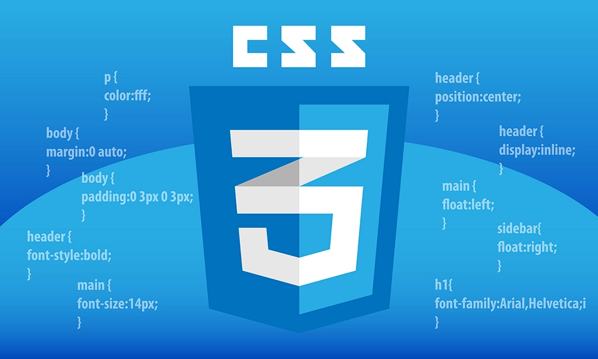
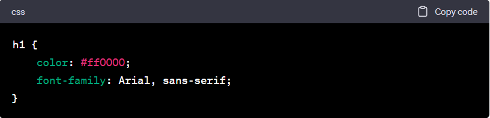
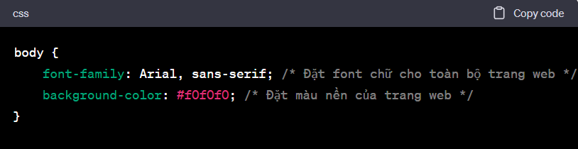

1. CSS là gì
CSS là viết tắt của "Cascading Style Sheets" (Bảng điều khiển kiểu dáng tầng bậc), là một ngôn ngữ được sử dụng để mô tả cách các trang web hoặc tài liệu được trình bày trên màn hình, giấy in hoặc các phương tiện truyền thông khác. CSS giúp kiểm soát giao diện người dùng của các trang web và tài liệu HTML bằng cách định rõ các thuộc tính như màu sắc, font chữ, khoảng cách, kích thước và định dạng của văn bản, hình ảnh và các phần tử trên trang. Bằng cách sử dụng CSS, người phát triển web có thể tách biệt nội dung và kiểu dáng, giúp dễ dàng quản lý, cập nhật và duy trì trang web mà không làm thay đổi cấu trúc HTML của trang. CSS giúp tối ưu hóa trải nghiệm người dùng bằng cách tạo ra các giao diện trang web thẩm mỹ và dễ đọc.Tìm hiểu về CSS

2. Cú Pháp Cơ Bản của CSS Cú pháp của CSS khá đơn giản. Bạn chỉ cần chọn phần tử HTML mà bạn muốn tùy chỉnh và xác định các thuộc tính và giá trị. Ví Dụ :

Trong đoạn mã trên, chúng ta đang định dạng tất cả các tiêu đề h1 để có màu đỏ và sử dụng font chữ Arial hoặc các font chữ thay thế không có serif.3. Các Kỹ Thuật Nâng Cao của CSS
Chúng tôi cũng sẽ giới thiệu cho bạn các kỹ thuật nâng cao của CSS như responsive design (thiết kế đáp ứng), animations (hiệu ứng chuyển động), và flexbox/grid layouts (bố cục linh hoạt). Điều này giúp trang web của bạn trở nên đẹp và dễ đọc trên mọi thiết bị.